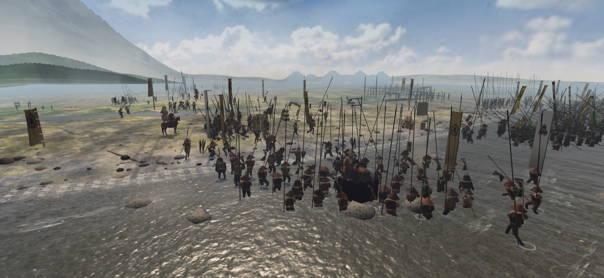

金ヶ崎の後、信長と家康は近江へ攻め入る。
姉川をはさみ、織田・徳川と浅井・朝倉がぶつかる。
浅井の先手の磯野員昌が深く攻め込むが、最後は織田・徳川が押し返す。

第9戦 元亀
元亀元年（1570）六月二十八日・近江国 姉川
見せ場 磯野の先手が幾段もの備を破る。味方の横槍をきっかけに、守りから追い討ちへ転じる。
金ヶ崎の後、信長と家康は近江へ攻め入る。
姉川をはさみ、織田・徳川と浅井・朝倉がぶつかる。
浅井の先手の磯野員昌が深く攻め込むが、最後は織田・徳川が押し返す。
織田方
本陣で全軍を率いる。（織田）
織田の段を率いる。（織田信勝→織田）
徳川に加勢する。（織田）
佐久間の段を率いる。（織田）
横山城の囲みに加わる。（織田）
先手の備を率いる。（斎藤→織田）
池田の段を率いる。（織田）
先手の段で戦う。（斎藤→織田）
遠藤直経を討ち取る。（斎藤→織田）
東から横槍を入れる。（斎藤→織田）
東の手を支える。（斎藤→織田）
東の手で戦う。（斎藤→織田）
西で朝倉と戦う。（今川→徳川）
徳川の先手を率いる。（徳川）
朝倉の大軍に挑む。（徳川）
朝倉の横を突く。（徳川）
徳川の控えを率いる。（徳川）
敵方
浅井の大将。（浅井）
先手で織田の段を破る。（浅井）
姉川で討死する。（浅井）
朝倉の大将。（朝倉）
姉川で討死する。（朝倉）
姉川で討死する。（朝倉）
足軽から、天下へ。
ダウンロードはApp Store